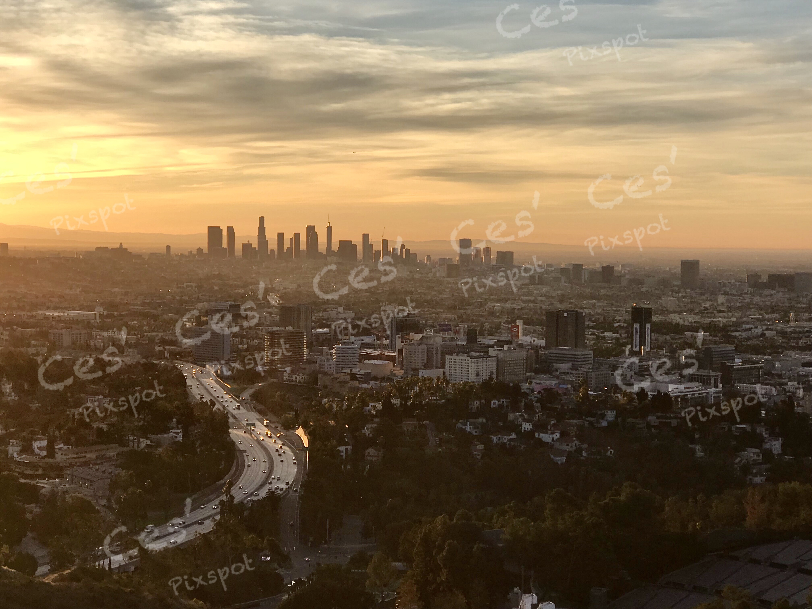
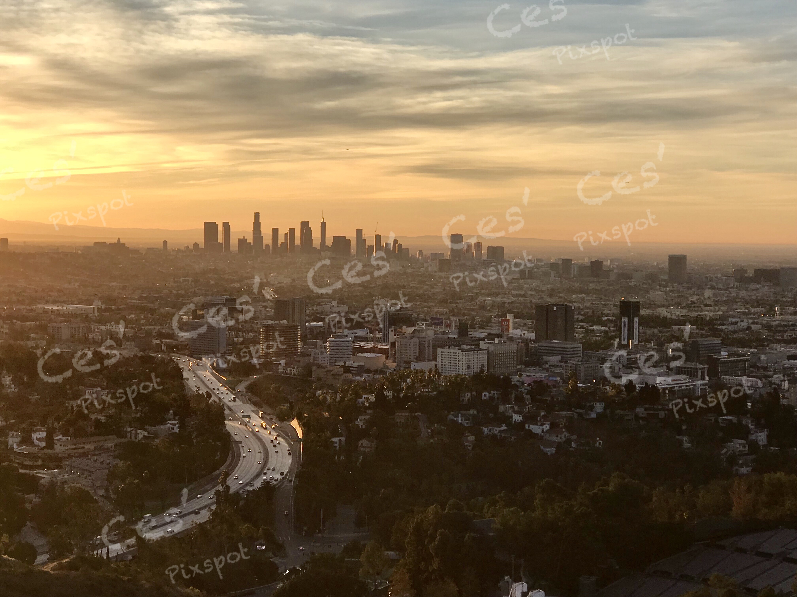
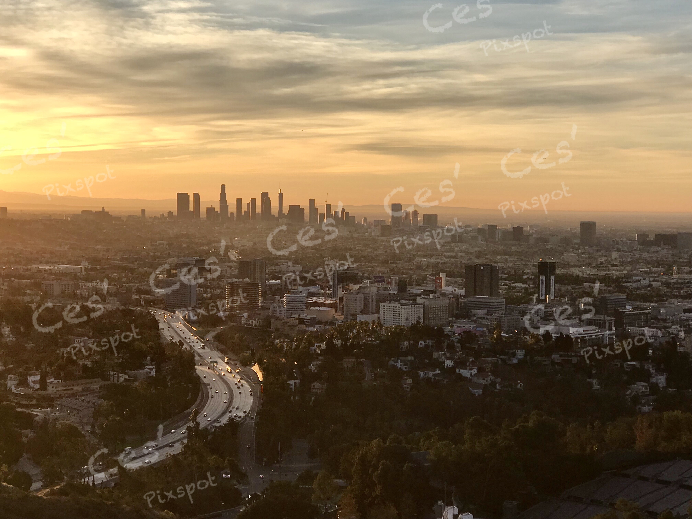
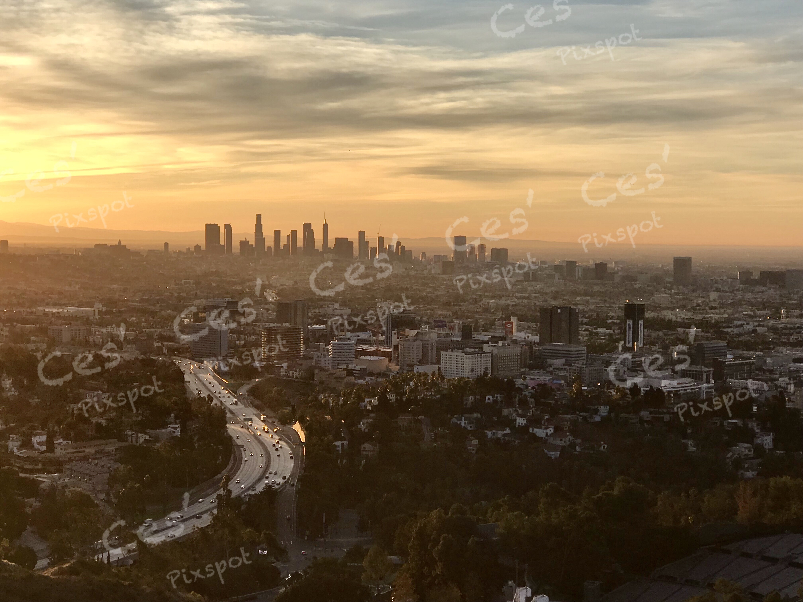

All Rights Reserved © 2019 Ces' PixSpot
I live in LA. I enjoy life to the fullest, love taking pictures of nature, places and people, I like hiking, cycling and traveling to new places. I also like the latest Technology that moves to connect the whole wide world.

 


